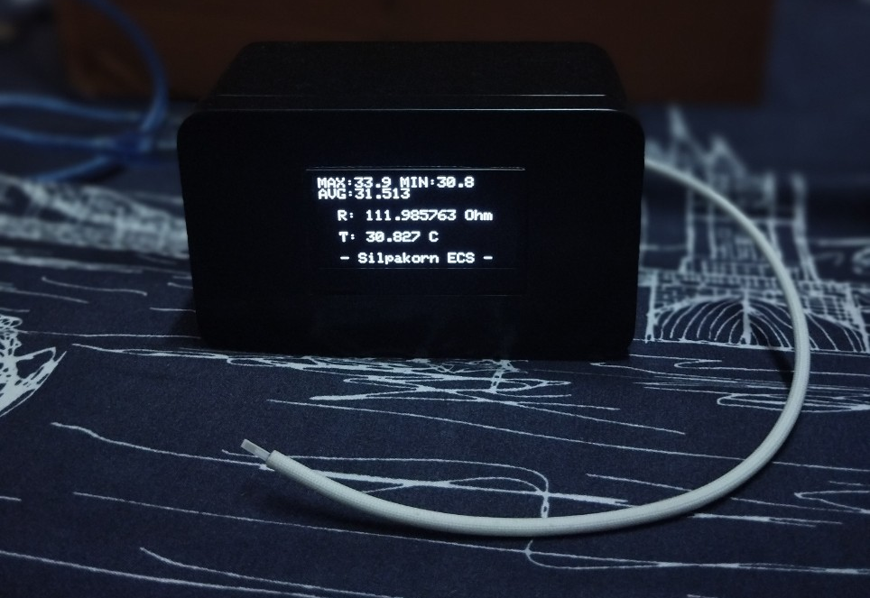
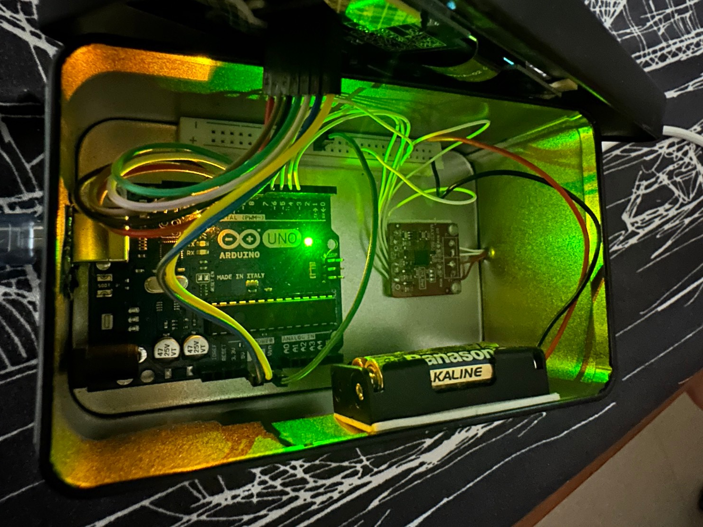
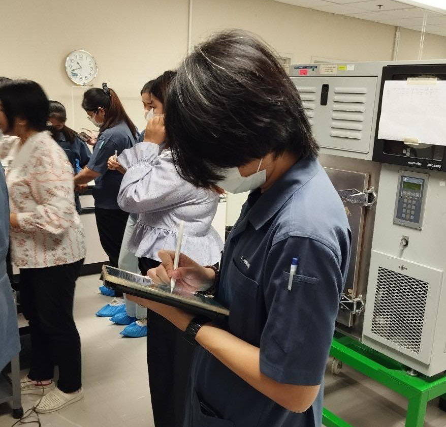
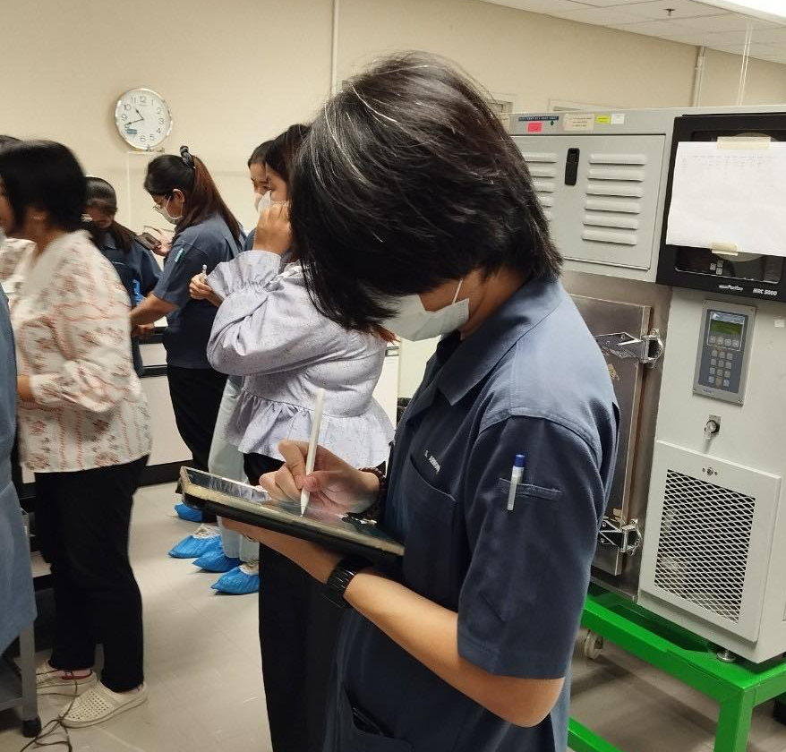

Final Projects :
The Artificial Thermometer With RTD Sensor Controlled By Developed LabVIEW Program.
  

The central control will be facilitated by LabVIEW programming, serving as an intermediary for issuing commands, measuring, analyzing, and controlling the system. The system will utilize RTD/PT100 temperature sensor devices, and as these sensors start operating, data will be automatically transmitted back to the LabVIEW program.